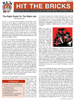

Submitted on Wed, 06/30/2010 - 1:14am
By Luci Scott - The Arizona Republic, Jun. 29, 2010
Twelve employees of Pei Wei Asian Diner at 54th Street and Ray Road in Chandler were fired after they skipped work to participate in a May 29 protest of the new immigration law Senate Bill 1070.
That was nearly half the staff at that restaurant, which has a workforce of about 30, said Pei Wei spokesman Peter Marino.
The fired workers violated a well-established Pei Wei attendance policy, he said.
"When employees choose not to show up for a scheduled shift and choose not to give notice, it causes tremendous disruption to fellow co-workers and impedes our ability to serve our guests," the company said in a statement.
At the same time, Pei Wei said it respects the rights of people to peacefully protest, and it does not comment on local, state or federal laws.
Submitted on Tue, 06/29/2010 - 8:38pm
The International Solidarity Commission (ISC) of the Industrial Workers of the World (IWW), a global union dedicated to revolutionary social change and workers self-management, is shocked and appalled by Israeli forces’ attack this morning on the lead ship of a humanitarian aid convoy, the Turkish vessel “Mavi Marmaris”, killing at least ten people.
The ISC holds the Israeli authorities entirely responsible for the provocative storming of the ship, and condemns the harm caused to the civilians on board, who included peace activists and parliamentarians from many different countries.
The ISC supports any efforts to deliver humanitarian aid to the people of Gaza, who have been suffering the effects of the Israeli blockade since 2007, a suffering greatly intensified by the massacre of Dec 2008-Jan 2009. We salute the brave human rights activists attempting to deliver aid to the people of Gaza, including the crew and passengers on the MV Rachel Corrie, en route to Gaza.
Submitted on Wed, 06/23/2010 - 4:49pm
Headlines:
- The Right Tools For The Right Job - By George Dozsa
- Welcome to the Business-Friendly Carpenter’s Union - By David Correia
- “The Wobblies Show” Debuts - By Jim Del Duca
Features:
- Reader Suggested Books
- On the Job Crossword Puzzle - by Jay
Download a Free PDF of this issue.
Submitted on Sun, 06/20/2010 - 9:26pm
Note: This action was not called by the IWW, though some IWW members participated in the planning of the event and at least a dozen joined in the action. The organizers included the Transport Workers Solidarity Committee and ANSWER. This article was originally posted here.
 In a historic action and unprecedented action today, over 800 labor and community activists blocked the gates of the Oakland docks in the early morning hours, prompting longshore workers to refuse to cross the picketlines where they were scheduled to unload an Israeli ship.
In a historic action and unprecedented action today, over 800 labor and community activists blocked the gates of the Oakland docks in the early morning hours, prompting longshore workers to refuse to cross the picketlines where they were scheduled to unload an Israeli ship.
Submitted on Wed, 06/16/2010 - 11:14am
Original Published at RVAnews [ http://rvanews.com/news/rrichmond-transit-riders-union-holds-first-meeting/29072 ]
Note: The Richmond Transit Riders Union was officially formed June 14th, 2010 at 9:30pm by riders of public transportation, namely Greater Richmond Transit Company, a bus system that serves the City of Richmond, Henrico, Petersburg, Fredricksburg, and *small* portion of Chesterfield County (co-owner with the City of Richmond), Virginia.
Richmond Transit Riders Union holds first meeting
by Erica Terrini
June 15, 2010
About 30 people attended the Richmond Transit Riders Union’s first Community Town Hall Meeting, Monday night at the University of Richmond Downtown building.
The RTRU’s initiating committee — made up of individual activists, Richmond Industrial Workers of the World members and other local organization supporters — spoke to community members about the Greater Richmond Transit Company’s (GRTC) recent service cuts, which they claim began with about five routes being eliminated and five being reduced in January.